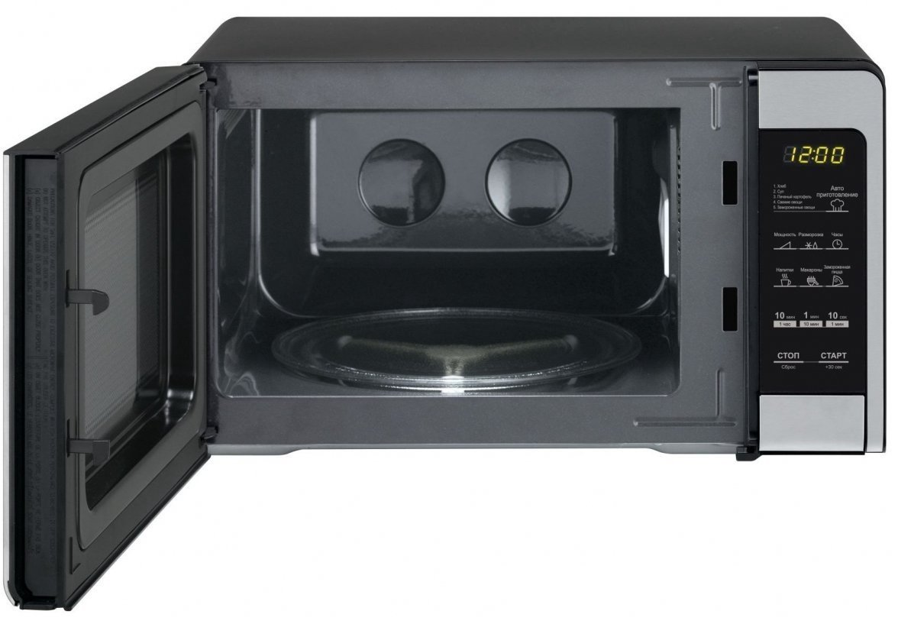

MIKROBANGŲ KROSNELĖS – ĮVAIRŪS MODELIAI ||1A.LT Mikrobangų krosnelė – virtuvės prietaisas, skirtas greitai pašildyti ar paruošti maistą. Mikrobangų krosnelės gali būti pastatomos arba įmontuojamos į baldus. Pastatomos mikrobangų krosnelės yra pigesnės ir lengvai perkeliamos į kitą vietą, o įmontuojamos, nors ir brangesnės, atrodo itin estetiškai, pasižymi didesniu ...
BOSCH mikrobangų krosnelės - kainos nuo 75.33 € | Kaina24.lt Mikrobangų krosnelėje su šiuo papildomu priedu galite sterilizuoti patiekalus (pavyzdžiui, skardines konservavimui ar kūdikių butelius). Kai kuriuose modeliuose, naudojant dvigubą katilą, mikrobangų krosnelė papildomai atlieka darbo kameros valymą garais. Dvigubą katilą galima plauti indaplovėje.
Mikrobangų krosnelė – naujausi produktai | Electrolux Mikrobangų krosnelė su 23 litrų kamera rekomenduojama 3-4 asmenų šeimai. 5-6 asmenų šeimai ir tiems kurie mėgsta pasikviesti svečių geriau pirkti mikrobangų krosnelę su 38-41 litro kamera. Tokios talpos kameroje galima ruošti antį, kalakutą ir gimtadienio pyragą. iki.
Mikrobangų krosnelės | Mikrobangų krosnelė su akcija
2020.10.28 19:23

Visos kategorijos
Buitinė technika
Buitinė technika
Šaldytuvai
Šaldytuvai
Šaldytuvai su šaldikliu apačioje Šaldytuvai su šaldikliu viršuje Šaldytuvai be šaldiklio Šaldytuvai Side-by-Side Vyno ir cigarų šaldytuvai Įmontuojami šaldytuvai ir šaldikliai Profesionali šaldymo ir brandinimo įranga Šaldikliai ir šaldymo dėžės Visi šaldytuvai Visi šaldytuvai ir šaldikliai Šaldymo įrangos priedai Nešiojami ir automobiliniai šaldytuvai Šaldikliai ir šaldymo dėžės
Šaldikliai ir šaldymo dėžės
Skalbimo mašinos
Skalbimo mašinos
Skalbimo mašinos Skalbimo mašinos su džiovykle Džiovyklės Visos skalbimo mašinos ir džiovyklės Skalbimo mašinų priedai Džiovyklės
Džiovyklės
Džiovyklės Skalbyklės-džiovyklės Viryklės
Viryklės
Elektrinės viryklės Dujinės viryklės su elektrine orkaite Dujinės viryklės su dujine orkaite Mini viryklės ir orkaitės Viryklių priedai Orkaitės
Orkaitės
Kaitlentės
Kaitlentės
Indukcinės kaitlentės Elektrinės kaitlentės Dujinės kaitlentės Kombinuotos ir Wok kaitlentės Indaplovės
Indaplovės
Indaplovės įmontuojamos Indaplovės laisvai pastatomos Visos indaplovės Indaplovių priedai Gartraukiai
Gartraukiai
Įmontuojami gartraukiai Gartraukiai tvirtinami prie sienos Gartraukiai tvirtinami prie lubų Gartraukiai pakabinami po spintele Gartraukių priedai Mikrobangų krosnelės
Virduliai Sumuštinių keptuvės Garų puodai Daugiafunkciniai puodai Elektriniai griliai Gruzdintuvės (fritiūrinės) Vaflinės, blynų ir spurgų keptuvės Skrudintuvai Spragėsių, cukraus vatos, smagaus maisto aparatai Duonkepės Mini orkaitės Mikrobangės krosnelės Mini viryklės Kiaušinių virtuvai Virtuvės ir stalo reikmenys
Virtuvės ir stalo reikmenys
Keptuvės Puodai ir greitpuodžiai Virtuvės įrankiai Gertuvės, termosai, termo puodeliai Kita virtuvės technika
Kita virtuvės technika
Vaisių džiovintuvai Termosai Vandens filtrai ir jonizatoriai Maisto atliekų smulkintuvai Vakuumatoriai ir vakuumavimo reikmenys Asmens ir namų priežiūra
Lygintuvai Lyginimo sistemos Lyginimo lentos Siuvimo mašinos
Siuvimo mašinos
Pūkų surinkėjai
Pūkų surinkėjai
Svarstyklės
Svarstyklės
Klimato kontrolės technika
Klimato kontrolės technika
Šildytuvai ir radiatoriai Šildomos antklodės, kojų šildytuvai Rankų džiovintuvai Ventiliatoriai Kondicionieriai ir vėsintuvai Oro drėkintuvai Oro valytuvai (jonizatoriai) Oro sausintuvai (drėgmės surinkėjai) Orų stotelės (drėgmės matuokliai) Magnetinio lauko, radiacijos, nitratų matuokliai Klimato kontrolės prietaisų priedai Kūno priežiūros priemonės
Kūno priežiūros priemonės
Barzdaskutės ir barzdakirpės Barzdaskučių priedai Epiliatoriai Nosies plaukų kirpimo mašinėlės Manikiūro ir pedikiūro priemonės Šildomos antklodės, kojų šildytuvai Dantų šepetėliai ir irigatoriai Kraujospūdžio matuokliai Plaukų priežiūros priemonės
Spausdintuvai Daugiafunkciniai spausdintuvai Skeneriai Dokumentų naikikliai Spausdintuvų kasetės Popierius Kompiuterių aksesuarai
Kompiuterių aksesuarai
Klaviatūros Pelės Kilimėliai Ausinės Kolonėlės Internetinės ir IP kameros Krepšiai, dėklai ir kuprinės Laidai Jungčių stotelės, stovai, aušintuvai Nepertraukiamo maitinimo šaltiniai (UPS) Išorinės baterijos (power bank) Nešiojamų kompiuterių įkrovikliai (pakrovėjai) Kortelių skaitytuvai, USB šakotuvai Tinklo įranga
Tinklo įranga
Maršrutizatoriai Bevielio tinklo (Wi-Fi) adapteriai Komutatoriai Išorinės duomenų laikmenos
Išorinės duomenų laikmenos
USB atmintinės Išoriniai kietieji diskai (HDD) Atminties kortelės CD/DVD/BD/MC laikmenos Programinė įranga
Programinė įranga
Operacinės sistemos Antivirusinės programos Biuro programos Kompiuterių komponentai
Kompaktiniai fotoaparatai Sisteminiai fotoaparatai Momentiniai fotoaparatai Vaizdo kameros ir registratoriai
Vaizdo kameros ir registratoriai
Vaizdo kameros Veiksmo kameros Vaizdo registratoriai Foto ir video aksesuarai
Foto ir video aksesuarai
Fotoaparatų objektyvai ir jų priedai Fotoaparatų baterijos ir įkrovikliai Vaizdo kamerų baterijos ir įkrovikliai Dėklai, krepšiai fotoaparatams ir objektyvams Laikmenos
Laikmenos
Atminties kortelės Video-audio juostos ir kitos laikmenos Baterijos, akumuliatoriai, įkrovikliai
Baterijos, akumuliatoriai, įkrovikliai
Baterijos USB įkrovikliai (pakrovėjai) Išorinės baterijos (power bank) Telefonai ir navigacija
Telefonai ir navigacija
Mobilieji telefonai
Mobilieji telefonai
Išmanieji telefonai Mygtukiniai telefonai Fiksuoto ryšio telefonai
Fiksuoto ryšio telefonai
Mobilių telefonų priedai
Mobilių telefonų priedai
Laisvų rankų įranga Telefonų įkrovikliai Telefonų dėklai Telefonų laikikliai Ekrano apsauga Atminties kortelės Selfie lazdos Mobiliųjų telefonų kolonėlės Išorinės baterijos (power bank) Išmanieji laikrodžiai ir apyrankės
Išmanieji laikrodžiai ir apyrankės
GPS navigacija
GPS navigacija
GPS navigacija transportui Vaizdo registratoriai Echolotai
Echolotai
Laisvalaikis ir pramogos
Laisvalaikis ir pramogos
Žaidimų kompiuterių priedai
Žaidimų kompiuterių priedai
Žaidimų kėdės ir stalai Dronai/Robotai
Dronai/Robotai
Žvejybos reikmenys
Žvejybos reikmenys
Paspirtukai
Paspirtukai
Turizmas
Turizmas
Miegmaišiai Palapinės Išmanieji laikrodžiai
Išmanieji laikrodžiai
Išmanioji sodininkystė
Išmanioji sodininkystė
Hamakai ir pakabinami krėslai
Hamakai ir pakabinami krėslai
Gyvūnų prekės
Gyvūnų prekės
Sporto prekės
Sporto prekės
Miele parduotuvė
Miele parduotuvė
Vertinimas 4.6 iš 5 | Viso 1221 Pagalba 8 700 80055 Vertinimas 4.6 iš 5 | Viso 1221 Prisijungti Buitinė technika Smulki virtuvės technika Asmens ir namų priežiūra Vaizdo ir garso technika Kompiuterinė technika Fototechnika, vaizdo kameros Telefonai ir navigacija Laisvalaikis ir pramogos Parduotuvė Šaldytuvai Šaldytuvai su šaldikliu apačioje Šaldytuvai su šaldikliu viršuje Šaldytuvai be šaldiklio Šaldytuvai Side-by-Side Vyno ir cigarų šaldytuvai Įmontuojami šaldytuvai ir šaldikliai Profesionali šaldymo ir brandinimo įranga Šaldikliai ir šaldymo dėžės Visi šaldytuvai Visi šaldytuvai ir šaldikliai Šaldymo įrangos priedai Nešiojami ir automobiliniai šaldytuvai Šaldikliai ir šaldymo dėžės Skalbimo mašinos Skalbimo mašinos Skalbimo mašinos su džiovykle Džiovyklės Visos skalbimo mašinos ir džiovyklės Skalbimo mašinų priedai Džiovyklės Džiovyklės Skalbyklės-džiovyklės Viryklės Elektrinės viryklės Dujinės viryklės su elektrine orkaite Dujinės viryklės su dujine orkaite Mini viryklės ir orkaitės Viryklių priedai Orkaitės Kaitlentės Indukcinės kaitlentės Elektrinės kaitlentės Dujinės kaitlentės Kombinuotos ir Wok kaitlentės Indaplovės Indaplovės įmontuojamos Indaplovės laisvai pastatomos Visos indaplovės Indaplovių priedai Gartraukiai Įmontuojami gartraukiai Gartraukiai tvirtinami prie sienos Gartraukiai tvirtinami prie lubų Gartraukiai pakabinami po spintele Gartraukių priedai Mikrobangų krosnelės Mikrobangų krosnelės Mikrobangų krosnelių priedai Įmontuojama technika Įmontuojami šaldytuvai Įmontuojamos indaplovės Įmontuojamos orkaitės Įmontuojamos kaitlentės Įmontuojami kavos aparatai Įmontuojamos mikrobangų krosnelės Įmontuojami gartraukiai Indų pašildymo stalčiai Kavos ir karštų gėrimų aparatai Kavos aparatai Kava Kavamalės Pieno plakikliai Arbatos aparatai Kavos aparatų priedai Maisto ruošimo ir smulkinimo technika Sulčiaspaudės Virtuviniai kombainai Virtuvinių kombainų priedai Mėsmalės Pjaustyklės Blenderiai (trintuvai) Mikseriai (plakikliai) Kokteilinės Peilių galąstuvai Virtuvinės svarstyklės Ledų, ledukų, jogurto aparatai Virimo ir kepimo technika Virduliai Sumuštinių keptuvės Garų puodai Daugiafunkciniai puodai Elektriniai griliai Gruzdintuvės (fritiūrinės) Vaflinės, blynų ir spurgų keptuvės Skrudintuvai Spragėsių, cukraus vatos, smagaus maisto aparatai Duonkepės Mini orkaitės Mikrobangės krosnelės Mini viryklės Kiaušinių virtuvai Virtuvės ir stalo reikmenys Keptuvės Puodai ir greitpuodžiai Virtuvės įrankiai Gertuvės, termosai, termo puodeliai Kita virtuvės technika Vaisių džiovintuvai Termosai Vandens filtrai ir jonizatoriai Maisto atliekų smulkintuvai Vakuumatoriai ir vakuumavimo reikmenys Valymo technika Dulkių siurbliai Dulkių siurbliai robotai Dulkių siurbliai-šluotos Rankiniai dulkių siurbliai Dulkių siurblių priedai Langų valymo prietaisai Batų valymo mašinos Gariniai valytuvai Lygintuvai (laidynės) Lygintuvai Lyginimo sistemos Lyginimo lentos Siuvimo mašinos Pūkų surinkėjai Svarstyklės Klimato kontrolės technika Šildytuvai ir radiatoriai Šildomos antklodės, kojų šildytuvai Rankų džiovintuvai Ventiliatoriai Kondicionieriai ir vėsintuvai Oro drėkintuvai Oro valytuvai (jonizatoriai) Oro sausintuvai (drėgmės surinkėjai) Orų stotelės (drėgmės matuokliai) Magnetinio lauko, radiacijos, nitratų matuokliai Klimato kontrolės prietaisų priedai Kūno priežiūros priemonės Barzdaskutės ir barzdakirpės Barzdaskučių priedai Epiliatoriai Nosies plaukų kirpimo mašinėlės Manikiūro ir pedikiūro priemonės Šildomos antklodės, kojų šildytuvai Dantų šepetėliai ir irigatoriai Kraujospūdžio matuokliai Plaukų priežiūros priemonės Plaukų džiovintuvai Plaukų džiovintuvų priedai Plaukų formavimo prietaisai Plaukų kirpimo mašinėlės Plaukų kirpimo mašinėlių priedai Šukos, šepečiai ir veidrodžiai Plaukų kirpimo žirklės, skustuvai Dantų šepetėliai ir irigatoriai Dantų šepetėliai Tarpdančių irigatoriai Dantų šepetėlių antgaliai ir priedai Buitinė chemija, valymo priemonės Priešgaisrinė sauga Dūmų, smalkių, dujų detektoriai Gesintuvai, nedegūs audeklai ir kt. Apsaugos sistemos Vaizdo stebėjimo kameros Vaizdo įrašymo įrenginiai Davikliai ir apsaugos sistemų priedai Sveikatos apsaugos priemonės Gyvūnų prekės Kirpimo mašinėlės gyvūnams Gyvūnų reikmenys Televizoriai Televizorių priedai Televizorių laikikliai Skaitmeniniai TV imtuvai (priedėliai) SMART TV priedai Nuotolinio valdymo pultai TV antenos ir jų priedai Namų kino sistemos Projektoriai Projektoriai Projektorių ekranai Projektorių laikikliai Media grotuvai Blu-Ray grotuvai DVD grotuvai Garso technika Ausinės Kolonėlės Diktofonai Muzikiniai centrai Magnetolos Radijo imtuvai ir žadintuvai Patefonai MP3/MP4 grotuvai Namų kino sistema Auto aparatūra Automagnetolos Automobiliniai garsiakalbiai Vaizdo registratoriai FM moduliatoriai Hi-Fi garso aparatūra Plokštelių grotuvai (patefonai) Hi-Fi garso kolonėlės Kabeliai ir adapteriai Vaizdo kabeliai USB kabeliai Tinklo kabeliai Adapteriai Laikikliai, stovai, staliukai Televizorių laikikliai Projektorių laikikliai Kolonėlių laikikliai Visi laikikliai Kompiuteriai Stacionarūs kompiuteriai Nešiojami kompiuteriai Planšetės Elektroninės skaityklės Nešiojami kompiuteriai Planšetiniai kompiuteriai Knygų skaityklės Stacionarūs kompiuteriai Monitoriai Biuro technika ir reikmenys Spausdintuvai Daugiafunkciniai spausdintuvai Skeneriai Dokumentų naikikliai Spausdintuvų kasetės Popierius Kompiuterių aksesuarai Klaviatūros Pelės Kilimėliai Ausinės Kolonėlės Internetinės ir IP kameros Krepšiai, dėklai ir kuprinės Laidai Jungčių stotelės, stovai, aušintuvai Nepertraukiamo maitinimo šaltiniai (UPS) Išorinės baterijos (power bank) Nešiojamų kompiuterių įkrovikliai (pakrovėjai) Kortelių skaitytuvai, USB šakotuvai Tinklo įranga Maršrutizatoriai Bevielio tinklo (Wi-Fi) adapteriai Komutatoriai Išorinės duomenų laikmenos USB atmintinės Išoriniai kietieji diskai (HDD) Atminties kortelės CD/DVD/BD/MC laikmenos Programinė įranga Operacinės sistemos Antivirusinės programos Biuro programos Kompiuterių komponentai Maitinimo blokai (PSU) Vidiniai standieji diskai (HDD) SSD diskai Projektoriai Projektoriai Projektorių ekranai Projektorių laikikliai Priedai Kabeliai ir adapteriai Vaizdo ir garso kabeliai LAN kabeliai USB kabeliai Adapteriai Elektros kabeliai, prailgintojai, adapteriai Spausdintuvų kasetės Originalūs toneriai Neoriginalūs toneriai Originalios rašalo kasetės Neoriginalios rašalo kasetės Fotoaparatai Kompaktiniai fotoaparatai Sisteminiai fotoaparatai Momentiniai fotoaparatai Vaizdo kameros ir registratoriai Vaizdo kameros Veiksmo kameros Vaizdo registratoriai Foto ir video aksesuarai Fotoaparatų objektyvai ir jų priedai Fotoaparatų baterijos ir įkrovikliai Vaizdo kamerų baterijos ir įkrovikliai Dėklai, krepšiai fotoaparatams ir objektyvams Laikmenos Atminties kortelės Video-audio juostos ir kitos laikmenos Baterijos, akumuliatoriai, įkrovikliai Baterijos USB įkrovikliai (pakrovėjai) Išorinės baterijos (power bank) Mobilieji telefonai Išmanieji telefonai Mygtukiniai telefonai Fiksuoto ryšio telefonai Mobilių telefonų priedai Laisvų rankų įranga Telefonų įkrovikliai Telefonų dėklai Telefonų laikikliai Ekrano apsauga Atminties kortelės Selfie lazdos Mobiliųjų telefonų kolonėlės Išorinės baterijos (power bank) Išmanieji laikrodžiai ir apyrankės GPS navigacija GPS navigacija transportui Vaizdo registratoriai Echolotai Žaidimų kompiuterių priedai Žaidimų kėdės ir stalai Dronai/Robotai Žvejybos reikmenys Paspirtukai Turizmas Miegmaišiai Palapinės Išmanieji laikrodžiai Išmanioji sodininkystė Hamakai ir pakabinami krėslai Gyvūnų prekės Sporto prekės 2 Ogmina Buitinė technika Mikrobangų krosnelės
Mikrobangų krosnelės
Mikrobangų krosnelė virtuvėje – nepamainoma pagalbininkė. Krosnelės, šildančios maistą mikro bangomis, jį pašildo greitai ir tolygiai. Mikrobangės su atlaidinimo funkcija padeda lengvai atitirpinti šaldytą maistą. Vos per kelias sekundes pašildykite patiekalus, skysčius, įvairius maisto produktus.
Prekių filtravimas Kategorijos Mikrobangų krosnelių priedai Kaina 56.990001678467 € 1309 € Gamintojas Valyti visus filtrus Caso (8) MIELE (4) MPM (1) Valdymas Valyti visus filtrus Elektroninis (16) Sensorinis (8) Mechaninis (7) Keptuvas (grilis) Valyti visus filtrus Nėra (23) Yra (5) Kvarcinis (3) Montuojamas į baldus prietaisas Valyti visus filtrus Montuojamas į baldus buitinės technikos prietaisas (17) Laisvai pastatomas buitinės technikos prietaisas (14) Mikrobangų galingumas 700 W 1000 W Talpa 20 ltr. 46 ltr. Rodyti: Pasirinkite Pasirinkite Pavadinimas (A - Z) Pavadinimas (Z - A) Kaina (Mažiausia Didžiausia) Kaina (Didžiausia Mažiausia) Rodyti: Pasirinkite Pavadinimas (A - Z) Pavadinimas (Z - A) Kaina (Mažiausia Didžiausia) Kaina (Didžiausia Mažiausia) Pasiekėte didžiausią lyginamų prekių skaičių. Išparduota -24,00 €
e
kaina Mikrobangų krosnelė BOSCH BFL523MS0 Serie | 4 Įmontuojamoji mikrobangų krosnelė, nerūdijančio plieno. Vidinė talpa: 20l. Maks galia 800 W; 5 mikrobangų krosnelės galios pasirinkimai. AutoPilot7. Mikrobangų krosnelės funkcija su 4 atitirpinimo programomis ir 3 kepimo programomis. atminties... Išparduota 225,00 € 249,00 € Pasiekėte didžiausią lyginamų prekių skaičių. Išparduota -22,00 €
e
kaina Mikrobangų krosnelė BOSCH BFL524MB0 Montuojama mikrobangų krosnelė, juoda. Maks galia 800 W; 5 mikrobangų krosnelės galios pasirinkimai: 90, 180, 360, 600, 800. Mikrobangų krosnelės funkcija su 4 atitirpinimo programomis ir 3 kepimo programomis. Sukamosios rankenėlės, Įspaudžiami sukamieji... Išparduota 227,00 € 249,00 € Pasiekėte didžiausią lyginamų prekių skaičių. Išparduota -22,00 €
e
kaina Mikrobangų krosnelė BOSCH BFL524MW0 Montuojama mikrobangų krosnelė, balta. Maks galia 800 W; 5 mikrobangų krosnelės galios pasirinkimai: 90, 180, 360, 600, 800. Mikrobangų krosnelės funkcija su 4 atitirpinimo programomis ir 3 kepimo programomis. Sukamosios rankenėlės, Įspaudžiami sukamieji... Išparduota 227,00 € 249,00 € Pasiekėte didžiausią lyginamų prekių skaičių. Išparduota
e
kaina Mikrobangų krosnelė Caso HCMG 25 900W su griliu, konvekcija Išparduota 196,99 € Pasiekėte didžiausią lyginamų prekių skaičių. Išparduota -11%
e
kaina Mikrobangų krosnelė DAEWOO KOR-6LBRB Retro Išparduota 69,95 € 79,00 € Pasiekėte didžiausią lyginamų prekių skaičių. Išparduota Mikrobangų krosnelė MIELE M 2234 OBSW Įmontuojama mikrobanginė orkaitė su šonuose įrengtais valdymo jutikliais, patogiam naudojimui. 7 segmentų ekranas su valdymo jutikliais – “EasySensor” Optimalus tolygus apskrudinimas – integruotas kvarcinis keptuvas. Tobulas atitirpinimas ir kepimas – aut... Išparduota 899,00 € Pasiekėte didžiausią lyginamų prekių skaičių. Išparduota Mikrobangų krosnelė MIELE M 2234 BRWS Įmontuojama mikrobanginė orkaitė su šonuose įrengtais valdymo jutikliais, patogiam naudojimui. 7 segmentų ekranas su valdymo jutikliais – “EasySensor” Optimalus tolygus apskrudinimas – integruotas kvarcinis keptuvas. Tobulas atitirpinimas ir kepimas – aut... Išparduota 899,00 € Pasiekėte didžiausią lyginamų prekių skaičių. Išparduota Mikrobangų krosnelė MIELE M 7244 EDST/CLST Įmontuojama mikrobanginė orkaitė. Tobulai suderintas dizainas, su viršuje įrengtais valdymo elementais. Tekstinis ekranas su jutikliniu valdymu – “DirectSensor S” Optimalus tolygus apskrudinimas – integruotas kvarcinis keptuvas. Tobulas atitirpinimas ir k... Išparduota 1309,00 € Pasiekėte didžiausią lyginamų prekių skaičių. Išparduota -13% Mikrobangų krosnelė WINIA DAEWOO KOR-661BW Išparduota 64,95 € 75,00 € Pasiekėte didžiausią lyginamų prekių skaičių. Išparduota -24,00 €
e
kaina Mikrobangų krosnelė BOSCH BFL524MS0 Montuojama mikrobangų krosnelė, nerūdijančio plieno. Maks galia 800 W; 5 mikrobangų krosnelės galios pasirinkimai. Mikrobangų krosnelės funkcija su 4 atitirpinimo programomis ir 3 kepimo programomis. Sukamosios rankenėlės, Įspaudžiami sukamieji mygtukai,... Išparduota 225,00 € 249,00 € Pasiekėte didžiausią lyginamų prekių skaičių. Išparduota -11%
e
kaina Mikrobangų krosnelė BOSCH BFL554MS0 Montuojama mikrobangų krosnelė, nerūdijančio plieno. Vidinė talpa: 25l. Maks galia 900 W; 5 mikrobangų krosnelės galios pasirinkimai. Mikrobangų krosnelės funkcija su 4 atitirpinimo programomis ir 3 kepimo programomis. Sukamosios rankenėlės, Įspaudžiami s... Išparduota 265,00 € 299,00 € Pasiekėte didžiausią lyginamų prekių skaičių. Išparduota -11%
e
kaina Mikrobangų krosnelė BOSCH BFL520MW0 Montuojama mikrobangų krosnelė. Vidinė talpa: 20l. Maks galia 800 W; 5 mikrobangų krosnelės galios pasirinkimai. Sukamosios rankenėlės. Į kairę atidaromos durelės. Paprastas ir patogus elektroninis valdymas. Vidaus apšvietimas. Besisukanti stiklinė 25,5 c... Išparduota 204,00 € 229,00 € Pasiekėte didžiausią lyginamų prekių skaičių. Išparduota -15% Mikrobangų krosnelė WINIA DAEWOO KOR 6627W Išparduota 58,95 € 69,00 € Pasiekėte didžiausią lyginamų prekių skaičių. Išparduota -12%
e
kaina Mikrobangų krosnelė BOSCH BFL520MB0 Montuojama mikrobangų krosnelė. Vidinė talpa: 20l. Maks galia 800 W; 5 mikrobangų krosnelės galios pasirinkimai. Sukamosios rankenėlės. Į kairę atidaromos durelės. Paprastas ir patogus elektroninis valdymas. Vidaus apšvietimas. Besisukanti stiklinė 25,5 c... Išparduota 202,00 € 229,00 € Pasiekėte didžiausią lyginamų prekių skaičių. Išparduota -11%
e
kaina Mikrobangų krosnelė BOSCH BFL554MB0 Montuojama mikrobangų krosnelė, juodos spalvos. Vidinė talpa: 25l. Maks galia 900 W; 5 mikrobangų krosnelės galios pasirinkimai. Mikrobangų krosnelės funkcija su 4 atitirpinimo programomis ir 3 kepimo programomis. Sukamosios rankenėlės, Įspaudžiami sukami... Išparduota 265,00 € 299,00 € Pasiekėte didžiausią lyginamų prekių skaičių. Išparduota
e
kaina Mikrobangų krosnelė Caso M 20 800W Išparduota 137,99 € Pasiekėte didžiausią lyginamų prekių skaičių. Išparduota
e
kaina Mikrobangų krosnelė Caso M20 EASY 03309 20L 700W Išparduota 98,99 € Pasiekėte didžiausią lyginamų prekių skaičių. Išparduota -21% Mikrobangų krosnelė MPM MPM-20-KMG-03 Išparduota 69,99 € 89,00 € Pasiekėte didžiausią lyginamų prekių skaičių. Išparduota -15%
e
kaina Mikrobangų krosnelė WINIA DAEWOO KOR 6617W Išparduota 56,99 € 67,00 € Pasiekėte didžiausią lyginamų prekių skaičių. Išparduota -13% Mikrobangų krosnelė BOSCH BFR634GB1 Išparduota 449,00 € 515,00 € Pasiekėte didžiausią lyginamų prekių skaičių. Išparduota -13% Mikrobangų krosnelė BOSCH BFR634GS1 Išparduota 449,00 € 515,00 € Pasiekėte didžiausią lyginamų prekių skaičių. Išparduota -12%
e
kaina Mikrobangų krosnelė BOSCH BFL520MS0 Montuojama mikrobangų krosnelė, nerūdijančio plieno. Vidinė talpa: 20l. Maks galia 800 W; 5 mikrobangų krosnelės galios pasirinkimai: 90, 180, 360, 600, 800. Sukamosios rankenėlės. Į kairę atidaromos durelės. Paprastas ir patogus elektroninis valdymas. Vi... Išparduota 201,00 € 229,00 € Pasiekėte didžiausią lyginamų prekių skaičių. Išparduota
e
kaina Mikrobangų krosnelė Caso IMCG25 900W su griliu, konvekcija Išparduota 295,99 € Pasiekėte didžiausią lyginamų prekių skaičių. Išparduota
e
kaina Mikrobangų krosnelė Caso 3307 M20 Ecostyle 20L 700W Išparduota 93,99 € Pasiekėte didžiausią lyginamų prekių skaičių. Išparduota
e
kaina Mikrobangų krosnelė Caso BMG 20 800W su griliu Išparduota 146,99 € Pasiekėte didžiausią lyginamų prekių skaičių. Išparduota Mikrobangų krosnelė MIELE M 2230 OBSW Įmontuojama mikrobanginė orkaitė su šonuose įrengtais valdymo jutikliais, patogiam naudojimui. 7 segmentų ekranas su valdymo jutikliais – “EasySensor” Tobulas atitirpinimas ir kepimas – automatinės programos Patiekalai paruošti valgyti – automatinis šilum... Išparduota 799,00 € Pasiekėte didžiausią lyginamų prekių skaičių. Išparduota -6,00 €
e
kaina Mikrobangų krosnelė DAEWOO KOR 819RW Išparduota 89,00 € 95,00 € Pasiekėte didžiausią lyginamų prekių skaičių. Išparduota
e
kaina Mikrobangų krosnelė Caso EMCG 32 32L įmontuojama 1000W su griliu, konvekcija Išparduota 294,99 € Pasiekėte didžiausią lyginamų prekių skaičių. Išparduota Mikrobangų krosnelė DE DIETRICH DME7121X Montuojama mikrobangų krosnelė, nerūdijančio plieno. Vidinė talpa: 26 l. Maks galia 900 W; 6 mikrobangų krosnelės galios pasirinkimai. Automatinės programos. 3 užprogramuojami nustatymai. Sukamoji rankenėlė ir sensoriniai jungikliai. Į kairę atidaromos du... Išparduota 445,00 € Pasiekėte didžiausią lyginamų prekių skaičių. Išparduota Mikrobangų krosnelė DE DIETRICH DME7121A Montuojama mikrobangų krosnelė, juodos spalvos. Vidinė talpa: 26 l. Maks galia 900 W; 6 mikrobangų krosnelės galios pasirinkimai. Automatinės programos. 3 užprogramuojami nustatymai. Sukamoji rankenėlė ir sensoriniai jungikliai. Į kairę atidaromos durelės... Išparduota 445,00 € Pasiekėte didžiausią lyginamų prekių skaičių. Išparduota
e
kaina Mikrobangų krosnelė Caso MCG30 30L 900W su griliu, konvekcija Išparduota 225,99 € Apie įmonę Apie įmonę Kontaktai Karjera Klientų atsiliepimai Pirkėjams SVARBU: pasikeitimai dėl COVID19 pandemijos Pristatymas ir apmokėjimas Garantija ir grąžinimas Naujienlaiškio prenumerata Taisyklės Privatumo politika Pratęsta garantija Būk atsakingas – atiduok perdirbimui Verta žinoti
2020-10-27
Elektrinis grilis – gaminkite kitaip
2020-10-22
Naujas Daewoo vardas – Winia
2020-10-21
Naujieji Dell Vostro 5401 jau mūsų asortimente!
Rodyti daugiau Didmenos atstovams Domina bendradarbiavimas perkant prekes, ar galbūt norite pasiūlyti savo prekes? Parašykite mums
Šioje svetainėje mes naudojame slapukus, nes to reikia sklandžiam aptarnavimo internetu procesui. Daugiau apie slapukus galite sužinoti čia . Naršymą tęskite paspaudę mygtuką „SUTINKU“ SUTINKU Privatumo politika Šioje svetainėje naudojami slapukai, kad būtų galima teikti paslaugas, suasmeninti skelbimus ir analizuoti srautą. Informacija apie šios svetainės naudojimą bendrinama su „Google“. Naudodami šią svetainę sutinkate, kad joje gali būti naudojami slapukai.